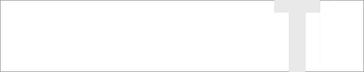

|
05
Ekim 2006, Perþembe > ÝSTANBUL TÝCARET ODASI "TÜRKÝYEDE
KALIPÇILIK SEKTÖRÜNÜN BUGÜNÜ-YARINI" SEMÝNERÝ
Yer: ÝTO Meclis Salonu (5. Kat)
ito-seminer-05-10-2006.pdf
SEMÝNER
PROGRAMI:
10:00 - 10:30 Kayýt (ikram)
10:30
- 10:40 > Açýþ Konuþmasý
I.OTURUM
10:40
- 11:00 > Harun MASATOÐLU (Oturum Baþkaný)
UKUB Yön. Kur. Baþkaný
11:00
- 11:20 > Prof.Dr. Mehmet Emin YURCÝ
(Y.T.Ü. Makine Malzemesi Ýmalat Teknolojisi ABD Baþkaný)
Yýldýz Teknik Üniversitesi'nde Kalýpçýlýk Programlarý
11:20
- 11:40 > Dr. Ýsmail Mehmet YEYÝNMEN
(FORM 2000 Kalýp Yönetim Kurulu Baþkaný)
Otomobil Endüstrisinin Sac Kalýp Ýhtiyacýna Bir Bakýþ
11:40
- 12:00 > Mustafa BÝNTAÞ
(MUBÝTEK Genel Müdürü)
Otomotiv Sanayinde Kalýpçýlýk
12:00
- 12:30 > Tartýþma/Soru-Cevap
12:30
- 13:00 > Ara
II. OTURUM
13:00
- 13:10 > Harun MASATOÐLU (Oturum Baþkaný)
(UKUB Yönetim Kurulu Baþkaný)
13:10
- 13:30 > Hasan BÜYÜKDEDE
(Ýstanbul Ticaret Odasý Meclis Baþkan Yardýmcýsý)
13:30
- 13:50 > Doç.Dr. Haydar LÝVATYALI
(Ý.T.Ü. Makina Fakültesi Öðretim Üyesi)
Kalýpçýlýk ve Ýlgili Konularda Dünyadaki Araþtýrma Kurumlarý
ve Üniversite-Sanayi Ýþbirliði Örnekleri
13:50
- 14:10 > Çay- Kahve Arasý
14:10
- 14:30 > Prof.Dr. Ahmet ÖZDEMÝR
(G.Ü.T.E.F. Öðretim Üyesi)
Gazi Üniversitesi'nde Kalýpçýlýk Eðitimi
14:30
- 14:50 > Refik DÝRÝ
(Karel Kalýp Genel Müdürü)
Küreselleþme Sürecinde Türk Otomotiv Sektöründe Kullanýlan
Plastik Kalýplarý
14:50
- 15:20 > Tartýþma/Soru-Cevap
14
Eylül 2006 > Seminer > Ýleri Teknoloji Ürünü Çelikler,
Otomotiv Endüstrisinde Uygulamalarý ve Geleceði
Dr.
Havva KAZDAL ZEYTÝN
Yer: TÜBÝTAK MAM Konferans Salonu GEBZE
Bu sunuþta, ileri teknoloji ürünü çelikler, üretim yöntemleri
ve özellikleri anlatýlacak, baðlý olarak otomotiv endüstrisi
için geliþtirilen çelikler ve kullaným alanlarý vurgulanacaktýr.
Ayrýca, Otomotiv endüstrisine yönelik olarak TÜBÝTAK MAM-
Malzeme Enstitüsü'nde yürütülmekte olan "Çift Fazlý Çeliklerin
Geliþtirilmesi" projesi ile ilgili bilgi verilecektir.
Daha
fazla bilgi için: www.mam.gov.tr/enstituler/me/me-tanitim-otomotiv.htm
Ýritbat:
Yusuf ÜNLER
TÜBÝTAK MAM Malzeme Enstitüsü PK. 21, 41470 Gebze KOCAELÝ
Te : (262) 641 23 00 / 3412
Faks: (262) 641 23 09
Yusuf.Unler@mam.gov.tr
Not:
Teknoloji Tanýtým Konferanslarý, teknolojide son geliþmeler
ile Malzeme Enstitüsü'nde araþtýrma ve geliþtirme çalýþmalarý
yürütülen ve uygulamaya yönelik bilgi birikimi saðlanan teknolojileri;
bu teknolojilerden yararlanmak ve kullanmak isteyen sanayicilere
ve teknik elemanlara tanýtmak amacýyla; bedelsiz olarak düzenlenmektedir.
www.mam.gov.tr/enstituler/me/me-egitim-tanitim.htm
05
- 08 Eylül 2006 > 12. Uluslararasý Makina Tasarýmý ve Ýmalatý
Kongresine (UMTÝK 2006)
Pine Bay Holiday Resort, Kuþadasý
Önceki
yýllarda yapýlmýþ olan UMTÝK Kongreleleri'nde olduðu gibi,
UMTÝK 2006'nýn amacý da Dünya'nýn her yerinden alanlarýnda
tanýnmýþ genç/deneyimli araþtýrmacýlarý, akademisyenleri ve
profesyonelleri biraraya getirerek makine tasarým ve imalatý,
imalat sistem ve teknolojilerindeki son geliþmelerin tartýþabileceði
bir forum oluþturmaktýr;
Konferans
Konularý:
- Ýleri
Tasarým ve Üretim Yöntemleri
- Makine
Tasarýmý ve Uygulamalarý
- Mühendislik
Tasarým Metodolojisi ve Tasarým Modelleri
- Makine
Elemanlarý ve Mekanik Sistemlerin Tasarýmý, Modellenmesi,
Analizi ve Hasar Oluþumu
- MEMS'in
Mekanik Tasarýmý ve Üretimi
- Üretim
Sistemlerinin Modellemesi ve Simulasyonu
- Bilgisayar
Yardýmý ile Tasarým ve Ýmalat
- Bilgisayar
Tümleþik Ýmalat Sistemleri
- Esnek
ve Daðýtýk Ýmalat Sistemleri
- Makine
Tasarým ve Ýmalatýnda Akýllý Sistemler
- Tasarým
ve Ýmalatta Yeni Geliþen Teknolojiler
Özel
Oturumlar:
- Bio-Muhendislikte
Tasarým, Analiz ve Simulasyon Uygulamalarý
Oturum Düzenleyicisi: Prof. Saied Darwish
- Mekanik
Sistemlerde Yorulma ve Kýrýlma
Oturum Düzenleyicisi: Dr. Serkan Dað
- Hýzlý
Prototipleme Yöntemleri ve Uygulamalarý
Oturum Düzenleyicisi: Dr. Merve Erdal
Daha
fazla bilgi için:
www.umtik.org

19
- 22 Haziran 2006 > 3. Ulusal Tasarým Kongresi - "Türkiye'de
Tasarýmý Tartýþmak"
ÝTÜ Taþkýþla
Ýlki
ÝTÜ Mimarlýk Fakültesi tarafýndan 1982 yýlýnda gerçekleþtirilen
Ulusal Tasarým Kongreleri'nin ikincisi ÝTÜ Endüstri Ürünleri
Tasarýmý Bölümü tarafýndan 1996 yýlýnda 'Tasarýmýn Evrenselleþmesi'
baþlýðý altýnda AB ile gümrük birliðinin yeni saðlandýðý koþullarda
ülke ekonomisi açýsýndan tasarýmýn yerinin ve öneminin irdelenmesi
amacýyla düzenlenmiþtir.
Aradan
geçen on yýl içinde dünyada ve özellikle Türkiye'de tasarýmýn
ekonomik, kültürel, politik ve toplumsal rolü ve görünürlüðüyle
ilgili geliþmeler konunun 'topyekün tartýþýlmasý' için verimli
bir zemin oluþturmaktadýr. Ayrýca bu süreçte Türkiye'de endüstriyel
tasarým konusunda üç önemli uluslararasý kongre düzenlenmiþken
konunun "Türkçe" olarak tartýþýlabileceði ulusal
nitelikte bir akademik platformun mevcut olmayýþý önemli bir
eksikliktir. Bu temel kavrayýþla ÝTÜ Endüstri Ürünleri Tasarýmý
Bölümü Ulusal Tasarým Kongre'lerin üçüncüsünü 'Türkiye'de
Tasarýmý Tartýþmak' baþlýðýyla 19-21 Haziran 2006 tarihleri
arasýnda Taþkýþla'da gerçekleþtirecektir.
Kongre
Temalarý:
Kongrenin temel amacý Türkiye'de endüstriyel tasarýmý olabildiðince
çok boyutlu bir yaklaþýmla ele alarak alanda araþtýrma ve
uygulama yapan tüm kesimlerin yer alabileceði bir iletiþim
ve tartýþma ortamý yaratmaktýr. Böylelikle bildiri sahiplerinin
iliþki kurabilecekleri bazý çalýþma alanlarý þu þekilde belirlenmiþtir:
Endüstriyel
Tasarým Eðitimi, Türkiye'de Tasarým Terminolojisi, Lisansüstü
Tasarým Eðitimi, Tasarým Araþtýrmalarý, Tasarým Teknolojileri,
Tasarým Kuramlarý, Tasarým Yöntemleri, Tasarým Politikalarý,
Türkiye Endüstriyel Tasarým Tarihi, Tasarým Felsefesi, Tasarým
ve Söylem, Toplumsal Kimlik, Cinsiyet ve Tasarým, Çaðdaþ Sanat
ve Tasarým, Gelenek ve Yenilik, Zanaat ve Tasarým, Tasarým,
Yönetim ve Strateji, Tasarým, Ekonomi ve Politika, KOBÝ'ler
ve Tasarým, Kültür, Endüstri ve Tasarým, Tasarýmýn Ýhracattaki
Rolü, Sektörel Düzeyde Tasarým: Otomotiv, Beyaz Eþya, Mobilya,
Taký, Sinema, Markalaþmada Tasarýmýn Rolü, Ambalaj Tasarýmý,
Teknoloji, Mühendislik ve Endüstriyel Tasarým, Tasarým, Medya
ve Ýletiþim, Tasarým Yayýncýlýðý, Tasarýmda Oryantalizm, Tasarým
ve Haklar (Ýnsan Haklarý, Tüketici Haklarý vb), Tasarýmda
Ýnsan Faktörleri, Tasarým ve Sürdürülebilirlik, Tasarýmda
Toplumsal Duyarlýlýk, Fikri Mülkiyet Açýsýndan Tasarým, Endüstriyel
Tasarým ve Mesleki Örgütlenme, Küresel Tasarým Piyasasýnýn
Dinamikleri, Türk Tasarým Pratiðinin Acil Sorunlarý...
Daha
fazla bilgi için: www.tasarim.itu.edu.tr/3utk.html
01
Haziran 2006 > Seminer > Titanyum Teknolojileri ve Uygulamalarý
Batu BÜTÜN
Yer: TÜBÝTAK MAM Konferans Salonu GEBZE
Titanyum'un
üstün özellikleri; havacýlýk, savunma, kimya sektörü, mimari
yapýlar, vücut içi protezler ve spor malzemeleri uygulamalarýnda
onu aranan bir metal durumuna getirmiþtir...
Daha
fazla bilgi için: www.mam.gov.tr/enstituler/me/me-tanitim-titanyum.htm
Ýritbat:
Yusuf ÜNLER
TÜBÝTAK MAM Malzeme Enstitüsü PK. 21, 41470 Gebze KOCAELÝ
Te : (262) 641 23 00 / 3412
Faks: (262) 641 23 09
Yusuf.Unler@mam.gov.tr
Not:
Teknoloji Tanýtým Konferanslarý, teknolojide son geliþmeler
ile Malzeme Enstitüsü'nde araþtýrma ve geliþtirme çalýþmalarý
yürütülen ve uygulamaya yönelik bilgi birikimi saðlanan teknolojileri;
bu teknolojilerden yararlanmak ve kullanmak isteyen sanayicilere
ve teknik elemanlara tanýtmak amacýyla; bedelsiz olarak düzenlenmektedir.
www.mam.gov.tr/enstituler/me/me-egitim-tanitim.htm
11
Mayýs 2006 > Seminer > Bilgisayar Destekli Tasarým-Ýmalat-Modelleme
ve Benzetim
(CAD/CAM/CAE) Optik Tarama (Sayýsallaþtýrma) ve CAD/CAM
Eðitim Olanaklarý
Enver Bülent YALÇIN, Dr. Levent TURHAN, Dr. Onur BARAN, Sedat
GÜLLE
Yer: TÜBÝTAK MAM Konferans Salonu GEBZE
- Unigraphics
NX3 yazýlýmý kullanýlarak 3 boyutlu model ve kalýp tasarýmý...
- ATOS
3D Sayýsallaþtýrma Sistemi...
- MSC.Dytran/Ls-Dyna,
MSC.Superforge ve Forge 3D (Transvalor) gibi sonlu elemanlar
analizi yazýlýmlarý...
- 4
eksenli CNC dik iþleme freze tezgahý...
- Fanuc
kontrol birimi bulunan CNC Torna Tezgahý...
- CAD/CAM
konusunda eðitim projesi...
Daha
fazla bilgi için: www.mam.gov.tr/enstituler/me/me-tanitim-pc-destek.htm
Ýritbat:
Yusuf ÜNLER
TÜBÝTAK MAM Malzeme Enstitüsü PK. 21, 41470 Gebze KOCAELÝ
Te : (262) 641 23 00 / 3412
Faks: (262) 641 23 09
Yusuf.Unler@mam.gov.tr
Not:
Teknoloji Tanýtým Konferanslarý, teknolojide son geliþmeler
ile Malzeme Enstitüsü'nde araþtýrma ve geliþtirme çalýþmalarý
yürütülen ve uygulamaya yönelik bilgi birikimi saðlanan teknolojileri;
bu teknolojilerden yararlanmak ve kullanmak isteyen sanayicilere
ve teknik elemanlara tanýtmak amacýyla; bedelsiz olarak düzenlenmektedir.
www.mam.gov.tr/enstituler/me/me-egitim-tanitim.htm
26
- 28 Nisan 2006 > Tasarým-Ýmalat-Analiz Kongresi ve CAD-CAM
GÜNLERÝ '06
Balýkesir Üniv. Müh. Mim. Fak. Makine Mühendisliði Bölümü,
Çaðýþ Kampüsü-Balýkesir
TÝMAK
(Tasarým-Ýmalat-Analiz Kongresi) Bildiri Konularý:
- Bilgisayar
Destekli Tasarým ve Ýmalat,
- CAD/CAM/CAE
uygulamalarý,
- Tersine
Mühendislik,
- Bilgisayar
Tümleþik Ýmalat Sistemleri,
- Makine
Tasarým ve Ýmalatýnda Akýllý Sistemler,
- Ýleri
Tasarým ve Üretim Teknikleri,
- Hýzlý
Prototipleme,
- Optimizasyon,
- Malzeme
Teknolojileri ve Malzeme Seçimi,
- Robotik,Mekatronik,
Daha
fazla bilgi için: http://timak.balikesir.edu.tr
|